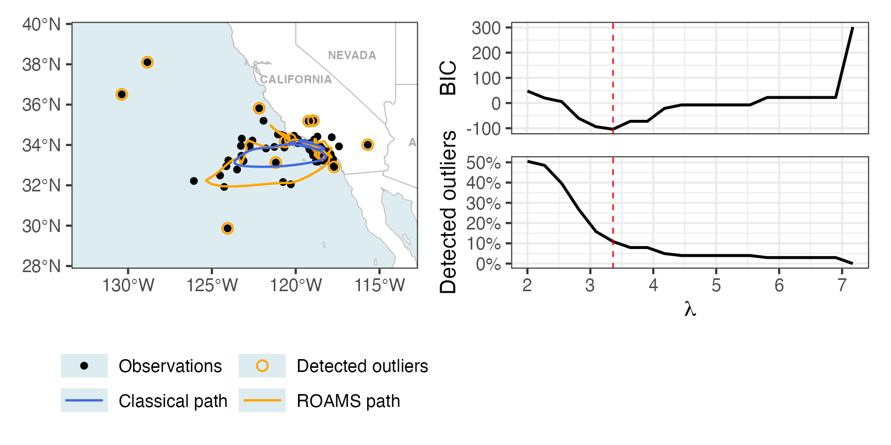

library(roams)
#> Loading required package: ggplot2
library(tidyverse)
#> ── Attaching core tidyverse packages ──────────────────────── tidyverse 2.0.0 ──
#> ✔ dplyr 1.1.4 ✔ readr 2.1.5
#> ✔ forcats 1.0.0 ✔ stringr 1.5.1
#> ✔ lubridate 1.9.4 ✔ tibble 3.2.1
#> ✔ purrr 1.0.2 ✔ tidyr 1.3.1
#> ── Conflicts ────────────────────────────────────────── tidyverse_conflicts() ──
#> ✖ dplyr::filter() masks stats::filter()
#> ✖ dplyr::lag() masks stats::lag()
#> ℹ Use the conflicted package (<http://conflicted.r-lib.org/>) to force all conflicts to become errorsOverview of the functions, including a simulated data set.
This vignette creates Figure 6 in Shankar et al. (2025).
whale_2008 = read_csv("data/Blue whales Eastern North Pacific 1993-2008 - Argos Data.csv") |>
# Standardise column names
janitor::clean_names() |>
# Keep only rows for the whale with ID "2008CA-Bmu-10839"
filter(individual_local_identifier == "2008CA-Bmu-10839") |>
# Replace missing values in 'manually_marked_outlier' with FALSE
mutate(manually_marked_outlier = tidyr::replace_na(manually_marked_outlier, FALSE)) |>
# Round timestamps to the nearest 12 hours
mutate(timestamp = lubridate::round_date(timestamp, "12 hours")) |>
# Within each group, keep only the last row (e.g. latest observation per 12-hour block)
group_by(timestamp) |>
slice_tail(n = 1) |>
# Convert the data to a tsibble object (time series tibble)
tsibble::tsibble() |>
# Fill in missing time points in the series with explicit gaps
tsibble::fill_gaps() |>
# Convert back to a regular tibble
as_tibble() |>
# Rename longitude/latitude columns to x and y
rename(x = location_long,
y = location_lat)
#> Registered S3 method overwritten by 'tsibble':
#> method from
#> as_tibble.grouped_df dplyr
#> Rows: 16249 Columns: 21
#> ── Column specification ────────────────────────────────────────────────────────
#> Delimiter: ","
#> chr (7): argos:iq, argos:lc, sensor-type, individual-taxon-canonical-name,...
#> dbl (11): event-id, location-long, location-lat, argos:best-level, argos:ca...
#> lgl (2): visible, manually-marked-outlier
#> dttm (1): timestamp
#>
#> ℹ Use `spec()` to retrieve the full column specification for this data.
#> ℹ Specify the column types or set `show_col_types = FALSE` to quiet this message.
#> Using `timestamp` as index variable.Paper whale
y = whale_2008 %>%
select(x, y) %>%
as.matrix()
var_est = c(mad(diff(y[,1]), na.rm = TRUE)^2,
mad(diff(y[,2]), na.rm = TRUE)^2)
build_fn = function(par) {
phi_coef = par[1]
Phi = diag(c(1+phi_coef, 1+phi_coef, 0, 0))
Phi[1,3] = -phi_coef
Phi[2,4] = -phi_coef
Phi[3,1] = 1
Phi[4,2] = 1
A = diag(4)[1:2,]
Q = diag(c(par[2], par[3], 0, 0))
R = diag(c(par[4], par[5]))
x0 = c(y[1,], y[1,])
P0 = diag(rep(0, 4))
specify_SSM(
state_transition_matrix = Phi,
state_noise_var = Q,
observation_matrix = A,
observation_noise_var = R,
init_state_mean = x0,
init_state_var = P0)
}
classical_model = classical_SSM(
y,
c(0.5, var_est, var_est),
build_fn,
lower = c(0, rep(1e-12, 4)),
upper = c(1, rep(Inf, 4)),
)
roams_model_list = roams_SSM(
y,
c(0.5, var_est, var_est),
build_fn,
num_lambdas = 20,
cores = 4,
lower = c(0, rep(1e-12, 4)),
upper = c(1, rep(Inf, 4)),
B = 50
)
classical_model = attach_insample_info(classical_model)
roams_model = best_BIC_model(roams_model_list)
roams_model = attach_insample_info(roams_model)
plot_data = tibble(
x_data = y[,1],
y_data = y[,2],
x_roams = roams_model$smoothed_observations[,1],
y_roams = roams_model$smoothed_observations[,2],
x_classical = classical_model$smoothed_observations[,1],
y_classical = classical_model$smoothed_observations[,2],
outliers = (rowSums(abs(roams_model$gamma)) != 0),
)
readr::write_rds(plot_data, "data/whale_plot_data.rds")
readr::write_rds(roams_model_list, "data/whale_roams_model_list.rds")Load whale_plot_data.rds and
whale_roams_model_list.rds:
plot_data = readr::read_rds("data/whale_plot_data.rds")
roams_model_list = readr::read_rds("data/whale_roams_model_list.rds")
library(rnaturalearth)
library(rnaturalearthdata)
#>
#> Attaching package: 'rnaturalearthdata'
#> The following object is masked from 'package:rnaturalearth':
#>
#> countries110
library(sf)
#> Linking to GEOS 3.13.0, GDAL 3.8.5, PROJ 9.5.1; sf_use_s2() is TRUE
library(patchwork)
theme_set(
theme_bw(base_size = 16) +
theme(legend.position = "bottom",
legend.key.width = unit(1.2, "cm"))
)
world <- ne_countries(scale = "medium", returnclass = "sf")
# States/Provinces
states = ne_states(country = "United States of America")
plot_features = c("observations", "detected outliers", "classical path", "roams path")
colours = c("black", "orange", "royalblue", "orange")
labels = c("Observations", "Detected outliers", "Classical path", "ROAMS path")
p1 = ggplot(plot_data) +
geom_sf(data = world, fill = "white", color = "grey", linewidth = 0.3) +
# State/province labels
geom_sf_text(data = states, aes(label = str_to_upper(name)), size = 3,
color = "darkgrey", fontface = "bold") +
geom_sf(data = states, fill = NA, color = "grey", linewidth = 0.3) +
geom_point(aes(x = x_data, y = y_data, colour = "observations"),
size = 2) +
geom_point(data = plot_data |> filter(outliers),
aes(x = x_data, y = y_data, colour = "detected outliers"),
size = 3, pch = 1, stroke = 1) +
geom_path(aes(x = x_roams, y = y_roams,
colour = "roams path"),
linewidth = 0.8) +
geom_path(aes(x = x_classical, y = y_classical,
colour = "classical path"),
linewidth = 0.8) +
coord_sf(xlim = c(min(plot_data$x_data, na.rm = TRUE) - 3,
max(plot_data$x_data, na.rm = TRUE) + 3),
ylim = c(min(plot_data$y_data, na.rm = TRUE) - 2,
max(plot_data$y_data, na.rm = TRUE) + 2),
expand = FALSE) +
theme(panel.grid.major = element_blank(),
panel.background = element_rect(fill = "#ddecf0")) +
labs(x = NULL, y = NULL, colour = NULL) +
scale_colour_manual(values = setNames(colours, plot_features),
labels = setNames(labels, plot_features),
breaks = plot_features) +
guides(colour = guide_legend(ncol = 2, byrow = TRUE))
p1
#> Warning in st_point_on_surface.sfc(sf::st_zm(x)): st_point_on_surface may not
#> give correct results for longitude/latitude data
#> Warning: Removed 21 rows containing missing values or values outside the scale range
#> (`geom_point()`).
p2 = roams_model_list %>% autoplot()
# Extract individual plots for editing
p21 = p2[[1]]
p22 = p2[[2]] +
labs(y = "Detected outliers") +
scale_y_continuous(labels = scales::percent)
# Re-combine plots
p2 = p21 + p22 + plot_layout(nrow = 2, axes = "collect")
# Final plot
p1 + p2
#> Warning in st_point_on_surface.sfc(sf::st_zm(x)): st_point_on_surface may not
#> give correct results for longitude/latitude data
#> Warning: Removed 21 rows containing missing values or values outside the scale range
#> (`geom_point()`).
Shankar, R., Wilms, I., Raymaekers, J., & Tarr, G. (2025). Robust
outlier-adjusted mean-shift estimation of state-space models. https://arxiv.org/abs/????.?????